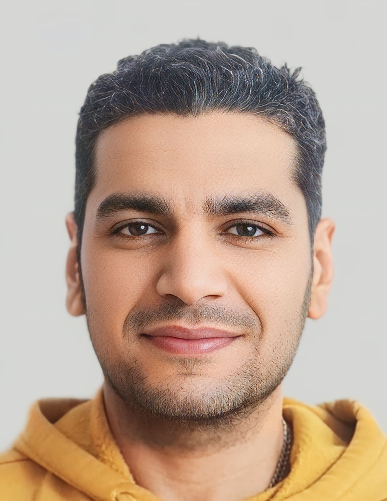

Personal Information
Location: Aschach an der Donau, Österreich
Email: a4karim@gmail.com
Phone: +43 660 536 586 4
Birthdate: 19.05.1989
Skills
- Microsoft Office
- Creativity
- Communication skills
- Time management
- Teamwork
- Fast learning
Languages
- Arabic
- German
- English
- Italian
Experience
Orthopaedic and Traumatology Specialist, Hand Surgery Focus - Klinikum Rohrbach
September 2018 - Present
- CTS operations
- Ring band splitting
- Ganglion excision
- Dupuytren's contracture
- Osteosynthesis of hand and wrist
- Wound treatment, including tendon and nerve sutures
- DIP arthrodesis